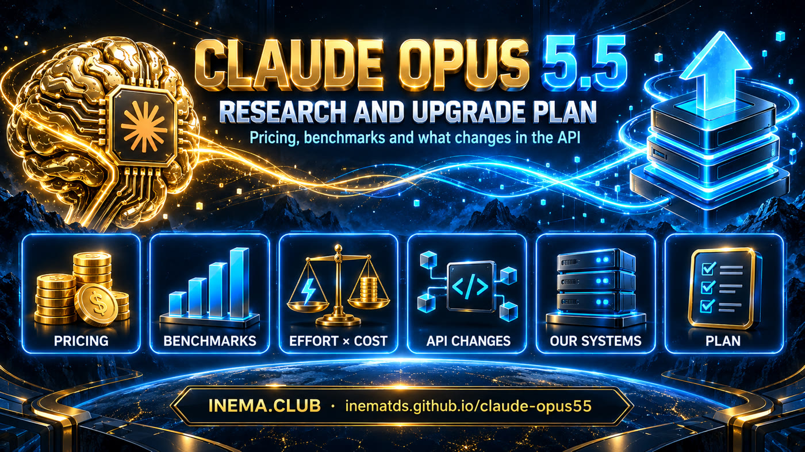

Pricing, benchmarks, what changes in the API and what to update in each system to use the new model.

With four API changes that break older code. API ID claude-opus-5-5, 1M context, 128K output, default effort medium.
US$ 4/20 versus 5/25 per million tokens
US$ 0.20 versus 0.50
approximate; Anthropic's estimate at default settings
Opus 5: 79.2 (system card, max effort)
+14 points over Opus 5
#1 on Artificial Analysis on 2026-09-22
anthropic.claude-opus-5-5), Vertex, Foundry, Claude Platform on AWS and GitHub Copilot.effort, and the default dropped from high to medium.opus alias resolves to claude-opus-5-5 (tested on 09/22). No system pins the new ID yet.With the largest cache discount in the Opus line.
| Model | Input | Output | Cache read | Batch (in/out) | Fast (in/out) |
|---|---|---|---|---|---|
| Fable 5.1 | 10 | 50 | 0.25 | 5 / 25 | — |
| Opus 5.5 | 4 | 20 | 0.20 | 2 / 10 | 8 / 40 |
| Opus 5 | 5 | 25 | 0.50 | 2.50 / 12.50 | 10 / 50 |
| Opus 4.8 | 5 | 25 | 0.50 | 2.50 / 12.50 | 10 / 50 |
| Sonnet 5 | 2 | 10 | 0.20 | 1 / 5 | — |
| Haiku 4.5 | 1 | 5 | 0.10 | 0.50 / 2.50 | — |
US$ per million tokens. Source: Anthropic's official pricing page [PR]. Fast mode is a research preview, available only on the Claude API.
And loses to GPT-6 Astra on three.
max effort (Terminal-Bench at xhigh), with production safeguards on. Several were run by partners (Cognition, Cursor, Zapier, Artificial Analysis).For less than a quarter of the cost per task, according to Artificial Analysis.
medium. If you don't set effort, you drop one level compared with Opus 5. In Anthropic's tests, 5.5 at medium beats Opus 5 at high on coding and knowledge work.medium scores 54.6% and max 54.4%. On CursorBench, going from medium (52.5%, ~US$ 3 per task) to max (57.8%) gains about 5 points at a higher cost per task.xhigh and max. Leave headroom in max_tokens (64K is the suggested starting point for long agent turns).Compared with Opus 5. Anyone coming from 4.x also inherits the earlier restrictions.
| # | What changes | Error | How to migrate |
|---|---|---|---|
| 1 | Thinking cannot be turned off. {type:"disabled"} and budget_tokens are rejected at every effort level. | 400 | Omit thinking (or use adaptive) and control it with output_config.effort. For low latency, low. |
| 2 | No forced tool use. tool_choice any/tool are rejected, including in Batches and count_tokens. | 400 | auto + strict: true + an instruction in the prompt, and check that the call happened. To extract JSON, structured outputs. |
| 3 | Preserved thinking. Thinking blocks are bound to the model and the conversation. Accounts created on or after 2026-08-31 get a 400 if the history is edited. | 400 / dropped | Append-only history. A system message mid-conversation instead of editing the system. Or the thinking-binding-controls beta with drop_block. |
| 4 | Computer use only through computer_toolset_20260801. computer_20251124 is rejected (API and Google Cloud). | 400 | Change the tool declaration and the agent loop (the action becomes the block's name, several per turn). |
| 5 | Text between tool calls now arrives as progress thinking blocks, empty under the default display. | none | thinking.display: "updates" (beta) or "summarized", and render those blocks. |
# Before: accepted on Opus 5, 400 on Opus 5.5 client.messages.create(model="claude-opus-5", max_tokens=16000, thinking={"type": "disabled"}, temperature=0.4, messages=[...]) # After: thinking always on, effort is the control client.messages.create(model="claude-opus-5-5", max_tokens=16000, output_config={"effort": "low"}, messages=[...])
temperature, top_p and top_k with non-default values return 400 since Opus 4.7.The first Opus with cyber, bio and reasoning-extraction classifiers (reasoning_extraction). A refusal comes back as HTTP 200 with stop_reason: "refusal". The recommendation is to enable server-side fallback (fallbacks: "default"), knowing that the fallback model runs without the 5.5 thinking blocks. The system card cites no ASL level and lists caveats: the model follows more malicious instructions pasted by the user and accepts more authorization claims that cannot be verified.
Read-only server inventory on 2026-09-22: model, how it is called, what to do and priority.
claude installs. ~/.local/bin/claude is 2.1.280 and /usr/bin/claude is 2.1.63, from an old global npm. The 17 yt-scheduler*.service units and two crons put /usr/bin first in PATH, so they run the old version, which defaults to claude-opus-4-6. Changing the model in config does not reach them.| System | Today | How it calls | What to do | Priority |
|---|---|---|---|---|
| yt-pub-lives (17 schedulers) | claude-opus-4-6 (2.1.63 default) | claude -p, old CLI | Fix the units' PATH (or update /usr/bin/claude) and pass --model opus explicitly. | HIGH |
| openpcbotv2 | claude-opus-5, effort low | Agent SDK 0.2.50 | Update the SDK, switch to claude-opus-5-5 in the agent.yaml files, keep effort explicit and add xhigh to the type. | HIGH |
| openpcbotv3 | alias opus → already 5.5 | CLI 2.1.280 | Nothing on the model. Check that effort is explicit in the yaml (the 5.5 default is medium). | OK |
| openpcbotv3 (OpenRouter tiers) | haiku-4.5 / sonnet-5 | OpenRouter, temperature 0.4 | If the premium tier moves to Opus 5.5, remove temperature. Fix the opus-5 price table (it says 15/75; the right value is 5/25). | MEDIUM |
| cerebro-vip (chat API) | opus-4.8, sonnet-5, fable-5 (default glm-5.2) | OpenRouter, temperature 0.2 | Add Opus 5.5 to the list and stop sending temperature to Claude 4.7+ models. | MEDIUM |
| cerebro-vip and telegramtopicosindex crons | alias sonnet | CLI 2.1.63 | Same PATH fix as the schedulers. | MEDIUM |
| inemaccvbot (stopped) | claude-opus-5, effort low | CLI | Switch to claude-opus-5-5 when it is reactivated. | MEDIUM |
| musicavideo | claude-fable-5 | CLI | Product decision: test Opus 5.5, which beats Fable 5.1 on most system card tests and costs 60% less. | MEDIUM |
| inemaccbot (10 profiles) | alias sonnet, effort low | CLI | Nothing now. Sonnet 5.5 arrives within weeks and the alias upgrades on its own. | LOW |
| Portal (site chat) | haiku-4.5 | OpenRouter | Nothing now. Wait for Haiku 5.5. | LOW |
| iccmonit | claude-haiku-4-5-20251001 | Python SDK | Keep it. If it ever moves to Opus 5.5, read the response by type (it uses content[0].text today, which breaks with thinking). | LOW |
| claudebot, inemabot, dsh-sandbox | sonnet-4-6, opus-4-6, sonnet-4.5 | various | Stopped legacy. Update only if it runs again. | LOW |
Not using Claude: inemanews, inemaeventos and the portal news feed (Groq), webmcp-readiness, inemacbot, agentehermes, dsh-orchestrator and cerebro-pro.
Five steps with real commands. Order matters: without step 1, model switches never reach the services running the old CLI.
Find out which claude each service sees and make all of them use the current version.
# see both installs which -a claude; /usr/bin/claude --version; ~/.local/bin/claude --version # option A: update the old global npm npm i -g @anthropic-ai/claude-code@latest # option B: in the yt-scheduler*.service units, put ~/.local/bin first in PATH Environment=PATH=/home/nmaldaner/.local/bin:/usr/local/bin:/usr/bin:/bin systemctl --user daemon-reload && systemctl --user restart 'yt-scheduler*'
The opus alias follows the newest model. Prefer the alias over pinning an ID; pin only where reproducibility matters.
# which model actually answered claude --model opus -p "ok" --output-format json | jq -c '.modelUsage|keys' # on 2026-09-22: ["claude-opus-5-5"]
In openpcbotv2, update the Agent SDK first and then change the model in the agent.yaml files, keeping effort explicit.
# 1) current SDK (0.2.50 ships an embedded CLI 2.1.50) npm i @anthropic-ai/claude-agent-sdk@latest # 2) agents/*/agent.yaml model: claude-opus-5-5 effort: low
Before pointing to Claude 4.7 or newer, remove temperature, top_p and top_k from the request body. The Opus 5.5 slug on OpenRouter still needs checking.
# no temperature/top_p/top_k for Claude 4.7+ { "model": "anthropic/claude-opus-...", "messages": [...] }
For any code that calls the API directly (Anthropic's migration guide).
| Type | Item |
|---|---|
| BLOCKS | ID claude-opus-5-5 (Bedrock: anthropic.claude-opus-5-5). |
| BLOCKS | Remove thinking disabled and budget_tokens. Size max_tokens for thinking + reply. Read blocks by type. |
| BLOCKS | Replace tool_choice any/tool with auto + strict, or structured outputs. |
| BLOCKS | Computer use through computer_toolset_20260801. |
| BLOCKS | Append-only history (preserved thinking). Handle stop_reason: "refusal" and enable fallback. |
| TUNE | Set effort explicitly and measure low/medium before going higher. |
| TUNE | UIs that showed text between tool calls: display: "updates". |
| TUNE | Re-measure cost and latency. Review prompts written for Opus 5 (verbosity, verification). |
API dates, according to Anthropic's release notes.
Research done on 2026-09-22, launch day: Anthropic's official documentation, third-party coverage and a read-only local inventory. Each chart uses a single source table. Self-reported numbers are marked as such.